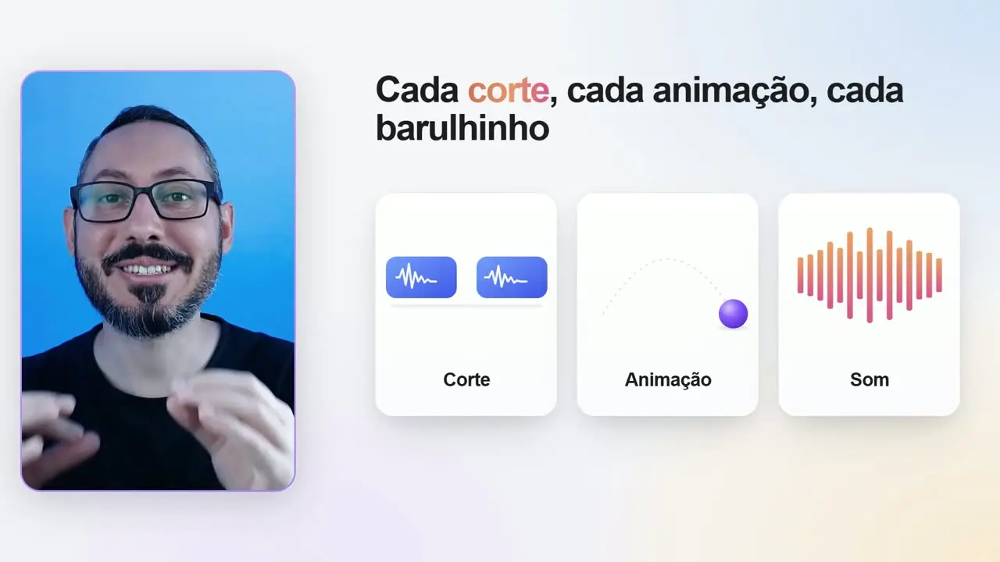
Aqui estão os prompts que eu usei para criar as duas skills que editam meus vídeos: uma tira os erros do vídeo bruto, a outra cria as animações e os sons. Copie, troque o que for do meu jeito pelo seu e siga na ordem.
Você não precisa instalar nada na mão. Instale só o Claude Code (precisa da assinatura do Claude) e peça para ele preparar o resto do computador.
Quero usar o Claude Code para editar vídeos, e não sei nada de programação. Prepare o meu computador por mim, do começo ao fim: 1. Descubra o meu sistema (Windows, Mac ou Linux) e instale o que estiver faltando: FFmpeg, Python 3.10 ou mais novo, Node.js 20 ou mais novo. 2. Instale as bibliotecas de Python: faster-whisper, numpy e opencv-python-headless na versão MENOR que 5 (a versão 5 não tem a detecção de rosto de que vou precisar). 3. Instale as skills oficiais do HyperFrames: hyperframes, hyperframes-cli e hyperframes-registry. 4. Teste cada ferramenta e me mostre uma lista simples: o que já estava instalado, o que você instalou e se está tudo funcionando. Fale comigo em português, sem termos técnicos. Se algo precisar da minha ação, me diga exatamente o que clicar ou digitar. Não apague nem altere nada que já exista no computador.
No final ele te mostra um resumo do que ficou pronto. Se algo falhar, copie a mensagem de erro, cole no mesmo chat e peça: "resolve isso por mim".
Quer gerar imagens também? Isso é opcional e vem na Etapa 7: o Claude instala e configura sozinho.
Crie uma pasta vazia (a minha é D:\skills\jump-cutter), abra o Claude Code nela e mande o prompt abaixo. Ele usa a skill skill-creator, que já vem no Claude Code.
Use a skill skill-creator. Quero que você crie uma skill chamada "jump-cutter", especializada na edição profissional de vídeos brutos com apresentador falando diretamente para a câmera. Objetivo: Transformar gravações contínuas em vídeos com cortes limpos, ritmo agradável e aparência natural, preservando o conteúdo e o estilo original do apresentador. A skill deve atuar como um editor de vídeos experiente, tomando decisões com base no conteúdo da fala, na análise do áudio e na continuidade visual. Meu estilo de gravação: Normalmente, gravo vídeos de forma contínua, sem interromper a gravação quando cometo erros. Quando erro alguma palavra ou frase, simplesmente repito aquele trecho até conseguir uma tomada satisfatória. Por isso, a skill precisa identificar essas tentativas, descartar os erros e manter as melhores versões, reconstruindo uma fala contínua e coerente. Regra principal: precisão dos cortes! Esta é a regra mais importante de toda a edição. Os cortes devem ser feitos observando cuidadosamente a forma de onda do áudio e os frames do vídeo. * Fim do trecho: cortar o mais próximo possível do final real da fala, sem eliminar fonemas ou terminações das palavras. * Início do próximo trecho: começar próximo do primeiro som da fala seguinte, sem deixar silêncios desnecessários. * Emenda: unir os trechos de maneira que o áudio tenha continuidade e a conversa pareça natural. * Continuidade visual: observar os frames próximos dos cortes e dar preferência aos momentos em que estou olhando diretamente para a câmera, evitando cortes durante movimentos bruscos, piscadas ou expressões estranhas. O áudio deve orientar a precisão do corte, mas a imagem também precisa ser considerada. Não aplicar margens fixas ou cortes automáticos cegamente. Cada transição deve ser analisada conforme o contexto. Processo de edição Siga este fluxo de trabalho: 1. Transcrição e compreensão: transcrever e analisar a gravação, compreendendo o conteúdo e identificando erros, repetições, pausas e retomadas de fala. 2. Seleção dos melhores takes: identificar tentativas repetidas, eliminar versões descartadas e escolher as melhores tomadas, preservando o sentido da explicação. 3. Limpeza de silêncios: remover intervalos desnecessários entre falas, mas preservar pausas naturais que contribuam para a compreensão e o ritmo. 4. Refinamento dos cortes: ajustar cada ponto de entrada e saída com precisão de frames, analisando o áudio e verificando possíveis estalos, palavras cortadas ou transições artificiais. 5. Continuidade visual: identificar saltos visuais desagradáveis. Quando necessário, utilizar pequenos ajustes de enquadramento ou elementos de apoio disponíveis, sem exageros e sem comprometer a naturalidade. 6. Revisão final: primeiro revisar o vídeo visualmente, observando os cortes e movimentos. Depois, revisar apenas ouvindo o áudio, verificando fluidez, pausas, ritmo e continuidade. Desenvolva a skill para executar esse processo de forma automatizada, utilizando as ferramentas e bibliotecas mais adequadas para análise de áudio, transcrição, inspeção de frames e edição de vídeo. O objetivo final é reproduzir o trabalho de um editor humano cuidadoso, e não simplesmente executar uma ferramenta de remoção automática de silêncios.
Troque a parte "Meu estilo de gravação" pelo seu jeito de gravar. É ela que ensina a skill o que é erro e o que fica.
Edite um vídeo de verdade, assista e corrija. Estes foram os ajustes que deixaram os cortes do meu jeito. Mande cada um no chat da pasta da skill, para virar padrão:
Precisa ser um corte mais próximo, mais preciso, uma emenda mais apertada. Tem vezes que eu estou olhando para baixo antes de começar a fala. Quero jump cut: seco mesmo, praticamente grudado uma frase na outra.
Quando eu erro, eu repito a mesma frase, e a última geralmente é a correta. Corta as tentativas repetidas e fica só com a última tomada.
O vídeo editado deve ter um nome com o tema + "_EDITADO" (ex.: como-os-dados-sao-organizados_EDITADO.mp4). Depois que eu assistir e aprovar, apaga o vídeo cru e os arquivos gerados: deixa só o vídeo editado e o SRT.
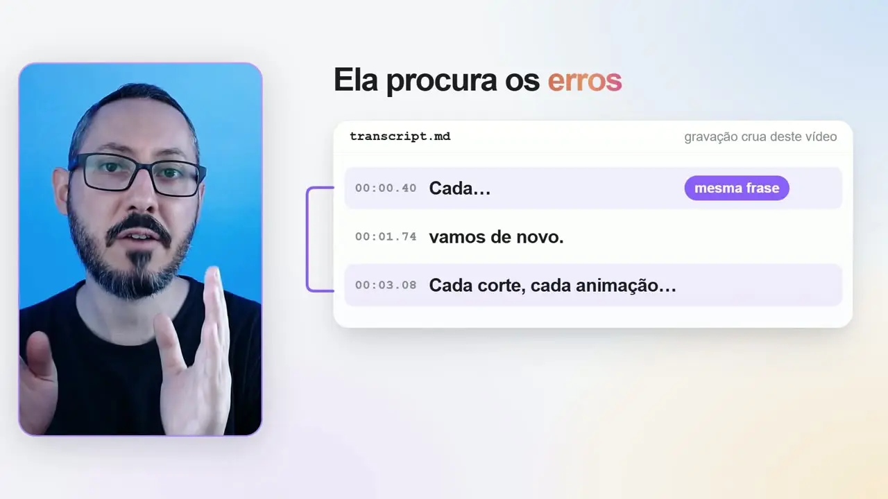
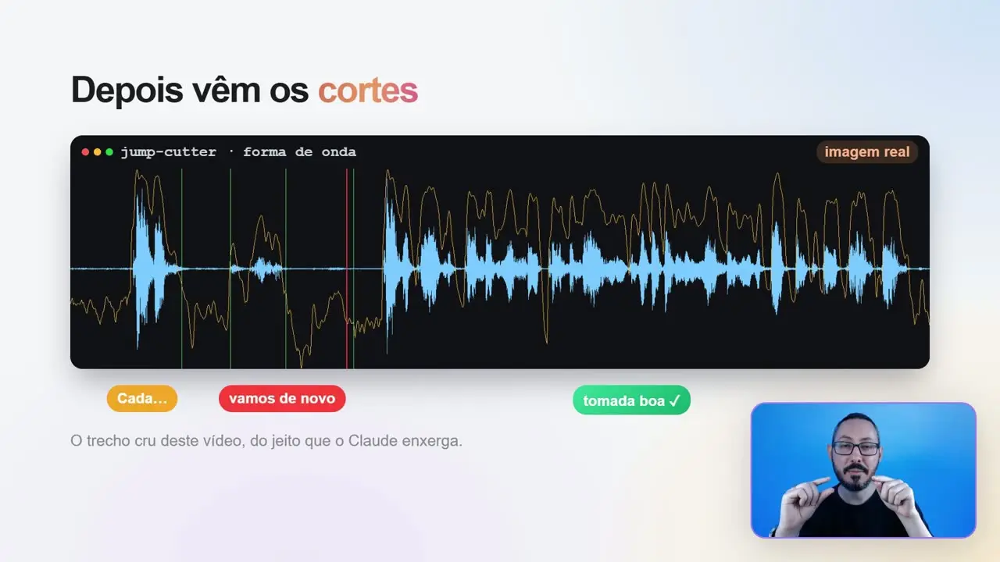
Com a skill pronta, é uma mensagem em qualquer chat:
/jump-cutter Corta todas as partes desse vídeo: "D:\Videos\meu-video\gravacao.mp4" Termos técnicos da fala: Claude Code, Whisper, FFmpeg, OpenCV, HyperFrames, GSAP, Codex
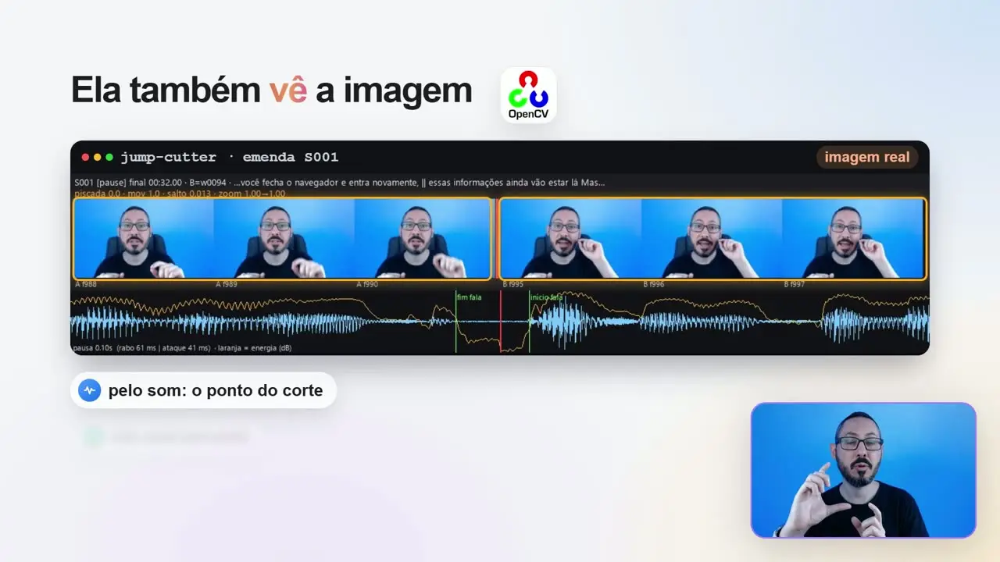
Você recebe tema_EDITADO.mp4 + .srt ao lado do original. A lista de termos técnicos evita que o Whisper erre os nomes.
Crie a pasta da segunda skill com dois materiais: trechos de vídeos no estilo que você quer e efeitos sonoros curtos.
Use trechos dos seus próprios vídeos como referência. Foi o que deixou o resultado com a minha cara.
Abra o Claude Code na pasta motion-editor e mande este prompt:
Use a skill skill-creator. Quero que você desenvolva uma Skill profissional e reutilizável para pós-produção automatizada de vídeos chamada "motion-editor", utilizando HyperFrames e, conforme necessário, GSAP, HTML, CSS, SVG, JavaScript, Node.js, Python, FFmpeg, Whisper e ferramentas que considerar importantes. A ideia é transformar o Claude Code em uma espécie de editor audiovisual inteligente, capaz de receber um vídeo previamente editado, compreender o conteúdo da narração e enriquecê-lo com animações, motion graphics, B-rolls, Picture in Picture (PIP), diagramas, elementos gráficos e efeitos sonoros. Não quero apenas adicionar efeitos genéricos ao vídeo. Quero que você trabalhe como um diretor criativo, motion designer e editor profissional, escolhendo as melhores soluções visuais para tornar cada explicação mais didática, interessante e envolvente. Você terá liberdade para tomar decisões criativas e técnicas. O importante é compreender a intenção do projeto e produzir um resultado de alta qualidade. 1. Biblioteca de referências visuais Na raiz do projeto existe uma pasta chamada `references/`, organizada em subpastas com diferentes estilos de animação. Inicialmente, teremos quatro categorias: * Animações com imagens: apresentação dinâmica de imagens, logotipos, ícones e ilustrações previamente fornecidos. Esses elementos podem aparecer progressivamente, com efeitos de fade, movimentos suaves, mudanças de escala e até interações simuladas com um cursor de mouse que se movimenta, clica e revela os elementos. O objetivo é transformar recursos estáticos em apresentações visuais envolventes e sincronizadas com a narração. * Animações de sintaxe: demonstrações de códigos e linguagens de programação, utilizando interfaces semelhantes às de editores profissionais. O código pode ser escrito progressivamente, com cursor de digitação, realce de sintaxe, destaques e movimentos que acompanham a explicação. * Animações dinâmicas: composições mais expressivas, com movimentação de elementos, zooms, transformações, mudanças de layout, transições e outros recursos que tornem o vídeo mais moderno e envolvente. * Animações de tópicos: apresentações organizadas e progressivas de conceitos, etapas e informações, utilizando textos, cards, destaques e elementos gráficos que aparecem conforme o raciocínio se desenvolve. Cada pasta poderá conter vídeos de referência, arquivos SRT e sequências de frames. Quero que você estude cuidadosamente esses materiais para compreender a linguagem visual, o ritmo, as composições, os movimentos e o acabamento que esperamos. As referências são uma fonte de inspiração, não modelos rígidos. Você não precisa reproduzir as mesmas animações. Pode adaptar técnicas, combinar estilos e criar composições completamente novas sempre que isso resultar em uma explicação visual melhor. Inclusive, os estilos podem ser combinados livremente. Uma animação de sintaxe pode utilizar movimentos de câmera, uma apresentação de imagens pode incorporar tópicos e assim por diante. A biblioteca também deverá permitir que novas pastas e referências sejam adicionadas futuramente, ampliando as possibilidades criativas da Skill. 2. Biblioteca de efeitos sonoros Na raiz do projeto também existe uma pasta chamada `SFX/`, contendo efeitos sonoros para utilização nas edições. Analise e catalogue esses arquivos para escolher os sons mais adequados a cada situação. Os efeitos poderão acompanhar aparições de elementos, transições, movimentos, cliques, destaques e outras interações visuais. Quero que os efeitos sejam utilizados com bom senso, de maneira natural e sincronizada com as animações. A narração deve permanecer sempre clara e em primeiro plano. Não adicione música de fundo, a menos que eu solicite. 3. Análise e compreensão do vídeo original Os vídeos fornecidos já estarão previamente editados, com os cortes principais realizados e a narrativa definida. Sua responsabilidade será trabalhar na pós-produção visual, preservando o conteúdo original. Antes de começar, analise o vídeo para identificar suas características técnicas e compreender tudo o que está sendo explicado. Utilize ferramentas como FFprobe, FFmpeg e Whisper, ou alternativas adequadas, para analisar o arquivo e obter uma transcrição sincronizada com a narração. Caso eu forneça um SRT ou uma transcrição, utilize esse material como ponto de partida, verificando sua precisão. É especialmente importante compreender em que momento cada informação é mencionada, porque as animações devem acompanhar o raciocínio do apresentador. Por exemplo, se eu disser: "Algumas das linguagens mais populares são PHP, JavaScript com Node.js, Python e Java." Você poderá criar uma composição em que cada linguagem aparece exatamente quando é mencionada. A intenção é que texto, imagem, movimento e efeitos sonoros trabalhem juntos, acompanhando naturalmente a explicação. 4. Direção criativa e escolhas visuais Esta é uma das partes mais importantes da Skill. Não quero que você simplesmente selecione uma animação da biblioteca e a repita ao longo do vídeo. Quero que você interprete o conteúdo de cada trecho e escolha a melhor maneira de representá-lo visualmente. Você poderá trabalhar com diferentes recursos, incluindo: Picture in Picture (PIP) O apresentador poderá aparecer em uma área menor da tela enquanto outros conteúdos são apresentados. Não quero que o PIP tenha sempre a mesma posição ou o mesmo formato. Dependendo da composição, ele poderá aparecer à esquerda, à direita, em um canto, na parte inferior ou em qualquer posição que faça sentido. O tamanho, o enquadramento e o posicionamento deverão ser definidos de acordo com os elementos que estão sendo apresentados. Você também poderá criar transições suaves entre diferentes composições. O importante é manter um layout equilibrado, valorizar o conteúdo e preservar um bom enquadramento do apresentador. B-rolls Quando for interessante, você poderá substituir temporariamente a imagem do apresentador por uma composição em tela cheia. Essas composições poderão incluir interfaces, simulações de navegação, animações de código, diagramas, ilustrações, gráficos, comparações, animações SVG ou outros recursos visuais. Os B-rolls devem ajudar o espectador a compreender o assunto, não simplesmente preencher espaços. Motion graphics sobre o apresentador Em outros momentos, pode ser mais interessante manter o apresentador em tela cheia e acrescentar elementos visuais discretos, como palavras-chave, ícones, indicadores, setas ou destaques. Esses elementos devem complementar a explicação sem atrapalhar o rosto ou outras informações importantes. Liberdade criativa Esses são apenas exemplos. Você poderá criar telas divididas, composições em camadas, animações tipográficas, sequências de cards, transições inteligentes e qualquer outra solução que considere adequada. Não é necessário manter animações durante todo o vídeo. Alguns momentos podem funcionar melhor apenas com o apresentador. O objetivo é encontrar um equilíbrio entre dinamismo, clareza e elegância. Quero que o resultado pareça uma edição profissional, com decisões criativas intencionais, e não uma coleção de efeitos aleatórios. 5. Qualidade e identidade visual Utilize o HyperFrames como principal ferramenta para criar e renderizar as composições, aproveitando os recursos e integrações mais adequados. Busque um visual moderno, limpo e sofisticado, com atenção especial à tipografia, hierarquia visual, alinhamento, espaçamento, cores, movimentos e transições. As animações devem ser fluidas e naturais, com um ritmo adequado ao conteúdo. Evite efeitos exagerados, elementos desalinhados, informações difíceis de ler e composições que pareçam apresentações de slides improvisadas. Prefiro uma animação simples e muito bem executada a uma composição complexa que prejudique a clareza. Mantenha uma identidade visual coerente entre as diferentes cenas, mas sem comprometer a variedade criativa. 6. Preservação do vídeo original O vídeo recebido já estará editado e deverá continuar sendo a base de toda a produção. Não altere os cortes originais, a ordem das falas, a velocidade de reprodução ou a duração do vídeo. As animações, os B-rolls, os efeitos e as composições PIP deverão ser incorporados à timeline existente, respeitando o sincronismo da narração. Quando utilizar o apresentador em PIP ou em outras composições, mantenha sua imagem sincronizada com o vídeo original, sem duplicar o áudio. O resultado final deverá preservar integralmente a narrativa e a duração do material recebido. 7. Edição por blocos e aprovação Quero que a produção seja organizada em blocos curtos, definidos de acordo com o contexto da narrativa. Por exemplo, um vídeo de 20 minutos poderia ser dividido em aproximadamente 10 blocos de 2 minutos. Entretanto, essa divisão não deve ser rígida. Analise a transcrição completa e identifique os momentos naturais de mudança de assunto ou conclusão de um raciocínio. Como referência, prefira blocos de aproximadamente 1 a 3 minutos, mas respeite a continuidade da explicação. Planejamento inicial Antes de começar a edição, analise o vídeo completo e prepare um planejamento com todos os blocos identificados. Para cada bloco, indique o timestamp de início e término, o assunto principal e algumas ideias iniciais de recursos visuais que poderão ser utilizados. Mantenha esse planejamento salvo no projeto, juntamente com o andamento de cada bloco, para que possamos acompanhar a produção e retomar o trabalho posteriormente. Produção incremental Não quero que o vídeo inteiro seja produzido de uma única vez. O processo deverá funcionar assim: 1. Analise o vídeo completo e organize os blocos. 2. Comece a produção exclusivamente pelo primeiro bloco. 3. Crie as animações, composições, B-rolls e efeitos sonoros necessários. 4. Renderize esse trecho como um vídeo independente. 5. Revise o resultado, identifique possíveis problemas e faça os ajustes necessários. 6. Disponibilize o bloco para minha avaliação. Aguarde minha aprovação antes de começar a produzir o próximo bloco. Se eu solicitar alterações, trabalhe apenas no bloco correspondente e apresente uma nova versão. Depois da aprovação, avance para o próximo, repetindo esse processo até concluirmos o vídeo. Não é necessário pedir minha autorização para cada decisão criativa ou técnica dentro do bloco. Quero que você trabalhe com autonomia, respeitando apenas essa etapa de aprovação entre os blocos. Continuidade entre os blocos Embora sejam produzidos separadamente, todos os blocos devem formar uma edição contínua. Mantenha coerência visual, preserve os tempos originais e cuide das transições para evitar interrupções perceptíveis entre os trechos. Organize os arquivos para que cada bloco possa ser revisado ou modificado sem precisar reconstruir todo o projeto. Montagem final Quando todos os blocos estiverem aprovados, faça a montagem do vídeo completo. Verifique a continuidade das cenas, a sincronização audiovisual e a integridade da edição. O arquivo final deverá preservar a duração original, sem cortes acidentais, frames duplicados ou interrupções na narração. 8. Implementação da Skill Quero que você crie efetivamente uma Skill reutilizável para o Claude Code, seguindo as boas práticas e a estrutura recomendada para esse tipo de recurso. Utilize um `SKILL.md` para as instruções principais e organize os demais arquivos, scripts e materiais da maneira que considerar mais adequada. A Skill deverá aproveitar o HyperFrames e as tecnologias mencionadas anteriormente, escolhendo as melhores abordagens para cada necessidade. Prefira aproveitar recursos oficiais e soluções existentes quando forem adequados, em vez de recriar funcionalidades desnecessariamente. O objetivo é que essa Skill possa ser utilizada em diferentes projetos de vídeo, e não apenas nesta primeira produção. Ela deverá saber trabalhar com os materiais fornecidos, consultar as bibliotecas de referência e efeitos sonoros, planejar a edição e produzir os blocos de maneira organizada. Também quero que seja possível interromper um projeto e retomá-lo posteriormente, preservando o planejamento, os arquivos e as aprovações já realizadas. Você tem liberdade para definir a arquitetura e resolver os detalhes técnicos da implementação. 9. Revisão e validação Não considere um bloco concluído apenas porque o código foi executado ou a renderização terminou. Quero que você também avalie o resultado audiovisual. Sempre que necessário, examine frames, renderize amostras e verifique a aparência das composições. Observe especialmente a legibilidade dos textos, o posicionamento dos elementos, a qualidade dos movimentos, a sincronização das animações e o equilíbrio dos efeitos sonoros. Corrija os problemas que identificar antes de apresentar o bloco para minha avaliação. Também verifique as características técnicas dos arquivos exportados e a integridade dos vídeos. 10. Resultado esperado Quero uma Skill capaz de atuar como um verdadeiro assistente de pós-produção audiovisual. Ela deverá combinar interpretação do conteúdo, criatividade, programação e ferramentas de composição para transformar vídeos já editados em apresentações visualmente mais ricas, profissionais e didáticas. A biblioteca `references/` servirá como uma fonte permanente de inspiração visual, enquanto a pasta `SFX/` fornecerá recursos sonoros para complementar as animações. Conforme novas referências forem adicionadas, a Skill deverá conseguir aproveitá-las em projetos futuros. O mais importante é que você compreenda a intenção por trás de cada explicação e tenha liberdade para encontrar a melhor solução visual. Não quero limitar sua criatividade com regras excessivamente rígidas ou determinar antecipadamente como cada animação deve ser construída. Quero que você utilize sua capacidade de análise, direção criativa e desenvolvimento para tomar boas decisões, produzir resultados de alta qualidade e aprimorar continuamente o processo. Implemente a Skill de maneira funcional e reutilizável, utilizando os recursos disponíveis no projeto e validando seu funcionamento na prática.
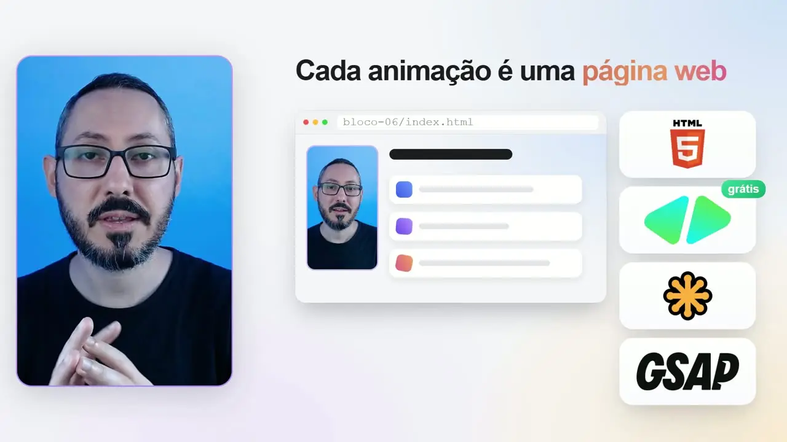
Para ícones e ilustrações que não existem, uso o Codex com a assinatura do ChatGPT, sem pagar API. É opcional.
Instale o Codex CLI no meu computador (npm install -g @openai/codex) e me guie para entrar com a minha conta do ChatGPT, explicando cada passo em português e sem termos técnicos. No final, teste se o login funcionou.
Depois, na pasta do Motion Editor:
Crie uma skill chamada codex-image que gera imagens pelo Codex CLI usando o meu login do ChatGPT (sem API paga), com opção de fundo transparente. Depois adicione na skill Motion Editor que ela pode usar a codex-image para criar as imagens do roteiro: ilustrações, ícones e qualquer coisa que fique melhor como imagem elaborada. Logos de marcas reais continuam vindo dos arquivos oficiais.
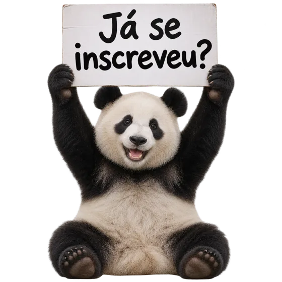
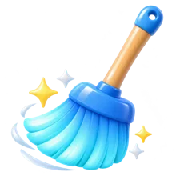
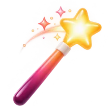
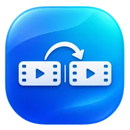
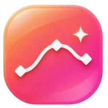
Junte numa pasta o vídeo limpo, a legenda, os logos oficiais e uma lista de termos. Depois mande:
/motion-editor Vídeo: D:\Videos\meu-video\video_EDITADO.mp4 Materiais na pasta D:\Videos\meu-video\: - legenda: legenda.srt - logos oficiais: logos\ - correções do ASR: correcoes_srt_sugeridas.txt - vocabulário técnico: termos_whisper.txt Contexto do vídeo: <assunto, público e objetivo em 1-2 frases> Direção: - Gancho inicial bem dinâmico, com muitas transições, bem cinemático. - Sempre que citar uma tecnologia, use o logo oficial da pasta logos\, grande. - Ilustrações sempre animadas e bem visíveis; não gosto de ícones pequenos. Sem exageros. - Sem música de fundo. - Quando eu pedir algo pro Claude Code no vídeo, mostre em tela cheia um chat igual ao do Claude Code, com o texto sendo digitado e o mouse clicando em enviar. - Pedidos que eu fizer ao vivo no vídeo (um som, mostrar algo): faça conforme o contexto. - Like e inscrição: sem animação especial.
Ela divide o vídeo em blocos de 1 a 3 minutos, entrega um por vez e espera a sua resposta.
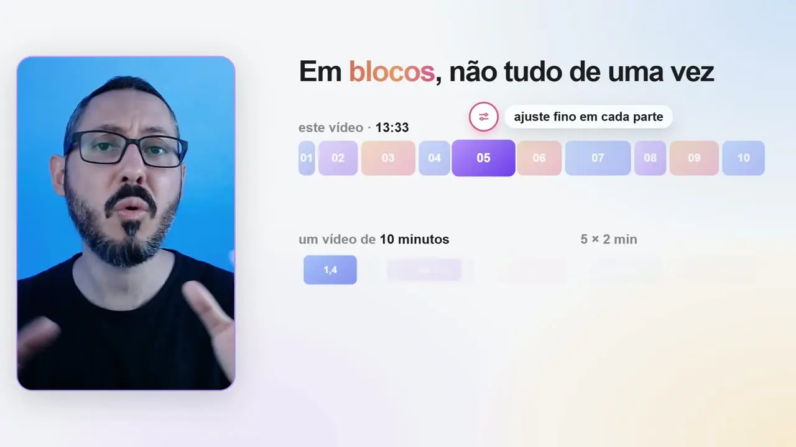
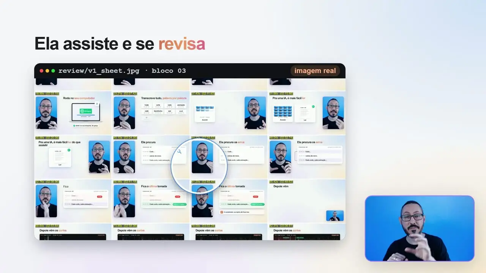
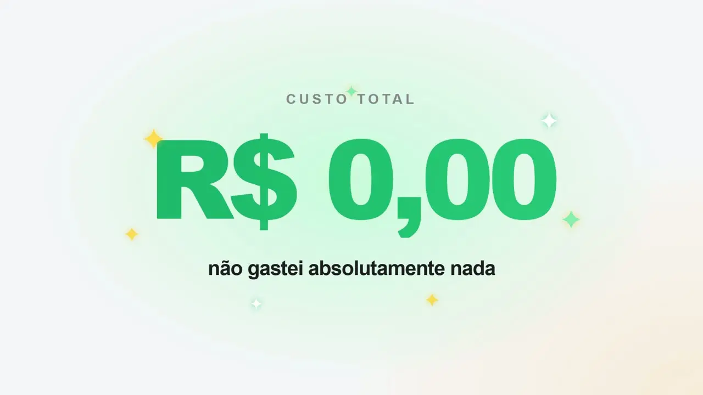
Mais duas skills fecham o vídeo: uma sugere 3 títulos para o teste A/B/C olhando vídeos que bombaram, a outra monta as 3 thumbnails com as suas fotos, os logos e o Codex.
Use a skill skill-creator. Crie uma skill que lê a transcrição do meu vídeo, compara com vídeos que bombaram no meu nicho do YouTube e sugere 3 títulos (A, B e C) para o teste A/B/C, recomendando o melhor. Ela deve registrar cada teste e aprender quando eu trouxer qual título venceu.
Antes era uma tarde inteira de CapCut. Agora é uma conversa de poucos minutos.